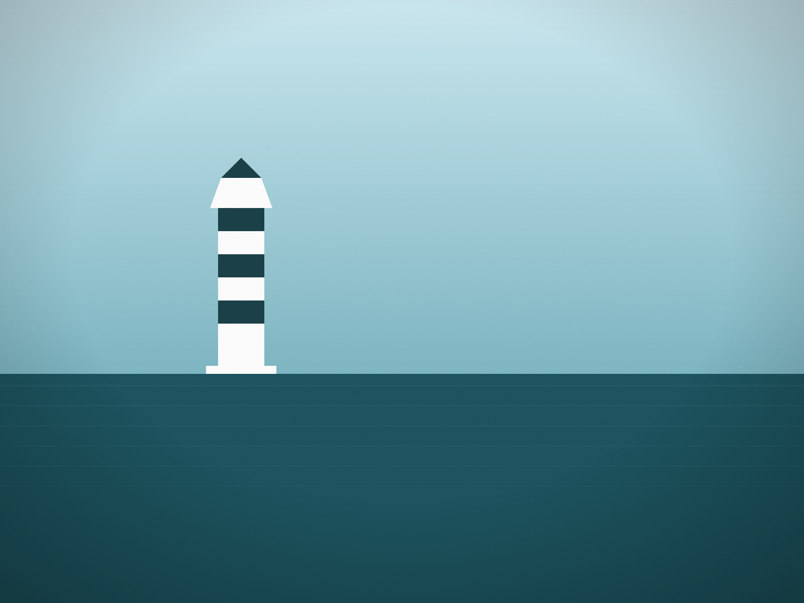

Look out from the Lewes shore toward the mouth of the bay and two lighthouses stand on lines of stone in the water. They are the Delaware Breakwater East End Lighthouse and the Harbor of Refuge Lighthouse, and they exist because the mouth of the Delaware Bay had no natural harbor.
Making a harbor
In 1825 an act of Congress authorized a breakwater off Cape Henlopen, to create a harbor where ships could shelter in stormy weather. Building it took decades: the breakwater was not completed until 1869.
East End, 1885
The Delaware Breakwater East End Lighthouse was built in 1885 on the eastern end of that breakwater. It is a conical tower of cast iron plates lined with brick.
It was fitted with a fourth-order Fresnel lens showing a fixed white light, with a red sector facing the sea to warn mariners off the dangerous shoals of Cape Henlopen. It was automated on July 11, 1950, and decommissioned in 1996.
Harbor of Refuge, 1902 to 1926
A second, outer breakwater followed: the National Harbor of Refuge. A temporary light was set up on its south end on Jan. 1, 1902. A three-story frame lighthouse replaced it in 1908, but a series of storms damaged that structure, and it was removed and replaced in 1926.
Coast Guard keepers manned the Harbor of Refuge light until it was automated in December 1973.
Seeing them
Both lights are offshore, and neither is reached on foot. They are best seen from the Lewes and Cape Henlopen shore, where the lines of the breakwaters show how much stone it took to make the bay safe to wait in. Delaware State Parks has written about both as part of the southern coast's lighthouse history.
Sources: U.S. Coast Guard Historian's Office, Harbor of Refuge Lighthouse history (history.uscg.mil), for the 1825 authorization, the 1869 completion, the 1902 temporary light, the 1908 and 1926 structures and the December 1973 automation; the Delaware Breakwater East End Lighthouse historical marker (Historical Marker Database) for the 1885 construction, materials, lens, red sector, 1950 automation and 1996 decommissioning; Delaware State Parks' "Shining a Light on Delaware's Historic Southern Coast Lighthouses." Access to the lights is not described here. Delaware Beach Finds did not visit for this story.